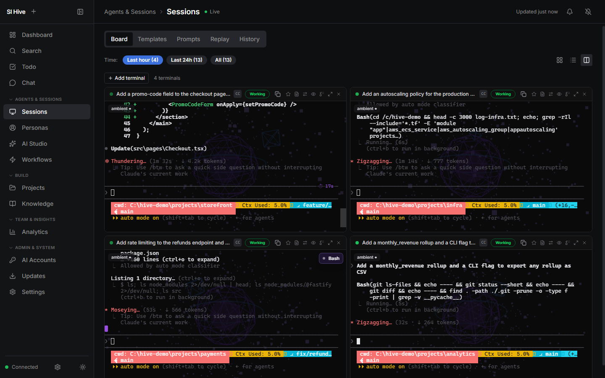
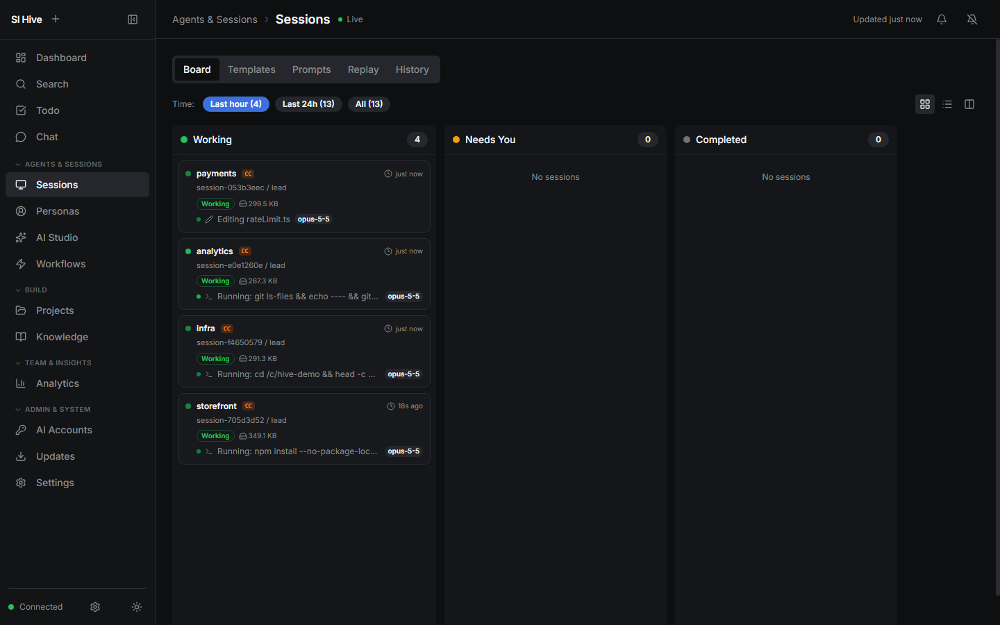
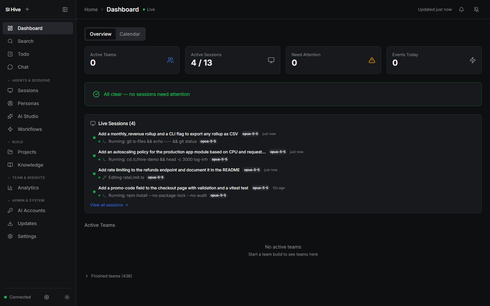
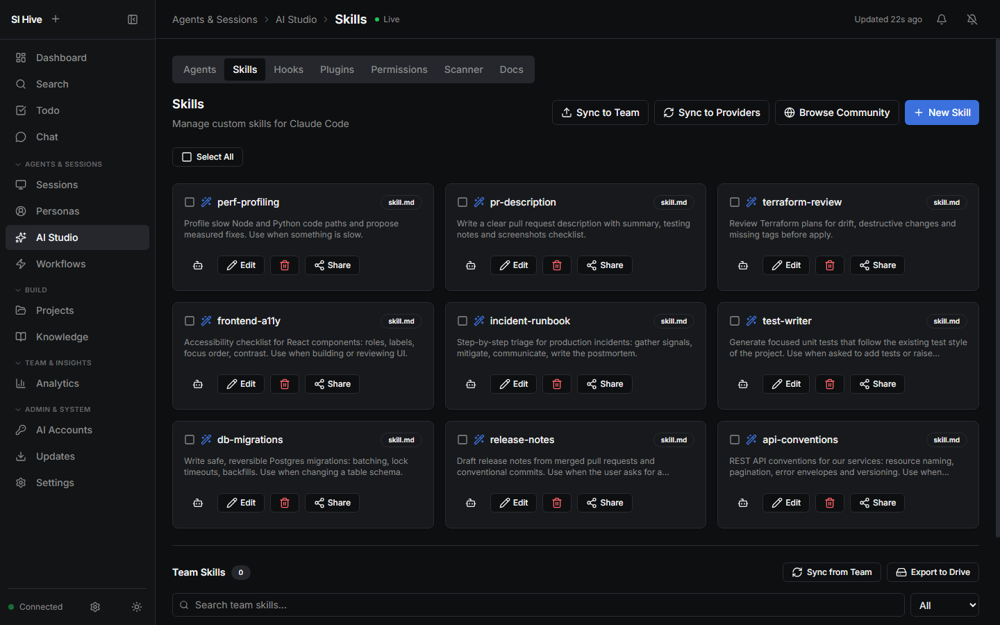
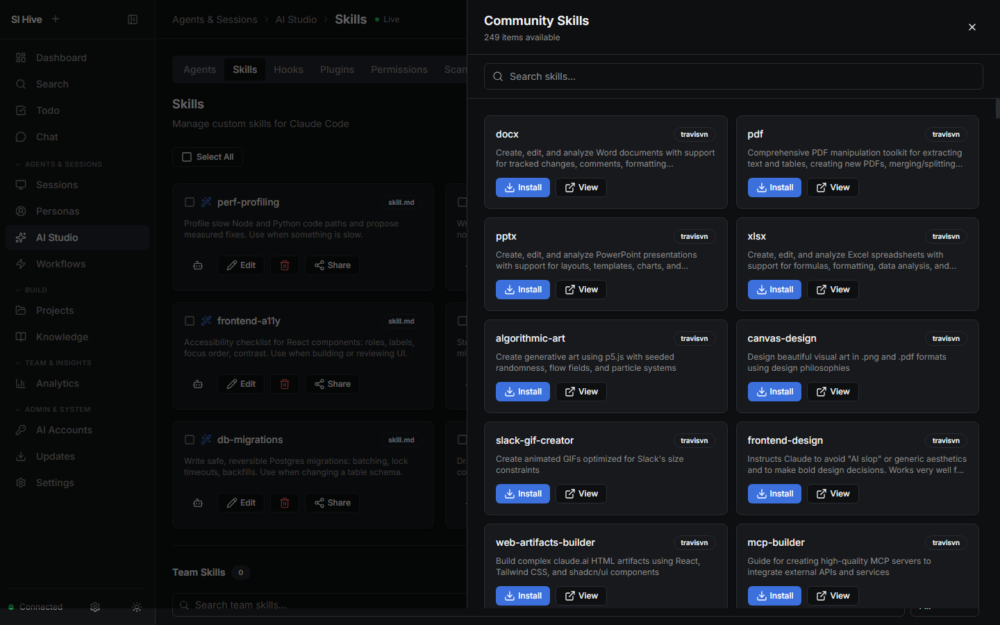
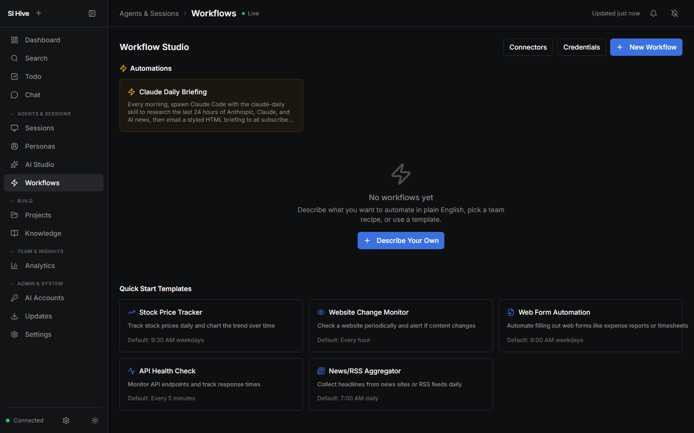
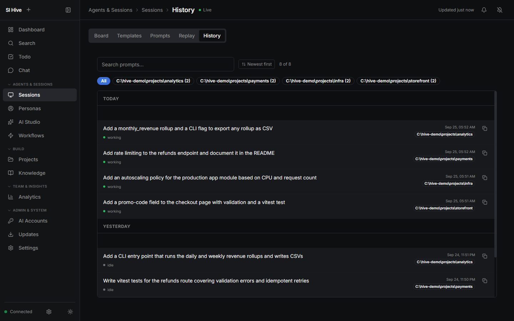

Superintelligence Hive
Run every AI agent from one place.
SI Hive is a dashboard that runs on your machine and drives Claude Code, Codex and Gemini CLI for you. Launch sessions side by side, see at a glance which one is waiting on you, and turn the work you repeat into workflows.
Free and local. Uses the AI tools and logins you already have. Windows and macOS.
payments needs you
Approve the push, or reply from any screen.
One home for all of your AI work
Whether you write code, research, analyze data or run a team, SI Hive keeps every session, project and workflow in one window, and picks up exactly where you left off.
Run many sessions at once
A terminal grid of live agents across all your projects. A board sorts every session into working, needs you and done, so nothing sits waiting on an answer you never saw.
Come back to anything
Every session, prompt and project stays searchable. Reopen a conversation from last week, replay what an agent did, or queue the next prompt to send the moment it finishes.
Teach it your standards
Manage the skills, agents, hooks, plugins and permissions your AI tools use. Require skills for a repo so every session follows the same rules, and share them with the whole team.
Take work from ticket to done
Connect GitHub, GitLab, Azure DevOps, Jira or Linear. Open a ticket, start an AI session primed with its details, get an AI review on the pull request, and follow CI in one place.
Automate the rest
Describe a workflow in plain English, or start from a template. Schedules, loops and monitors run on their own and report to Slack, Google Chat or email.
Grow into a team tool
Turn on sign-in and a shared database when you are ready. Hand a session to a teammate, see what everyone is running, and track time and usage without extra tools.
A look inside







Local by design
SI Hive runs on your computer and drives the official command-line tools in real terminals. Your code stays on your machine, and your AI sessions run on your own Claude, Codex or Gemini subscription, exactly as they would if you typed the commands yourself.
- No cloud service in the middle, and no account with us
- Works with the logins you already have
- Secrets encrypted on disk
- Team features use your own database when you turn them on
Works with the tools you use
- AI tools
- Claude Code, Codex CLI, Gemini CLI
- Code and tickets
- GitHub, GitLab, Azure DevOps, Jira, Linear
- Notifications
- Slack, Google Chat, email, webhooks, desktop alerts
- Runs on
- Windows and macOS